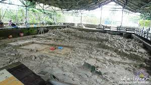
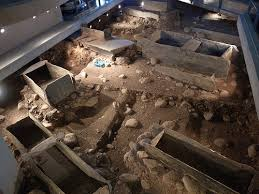

卑南族屬南島語系民族 花東縱谷南方的高山地區 知本系統，發源地為 Ruvoahan 「竹子而生」的南王系統 昔稱「八社番」。族群主要分布於台東境內 （台灣原住民族資訊資源網，2016)不過卑南遺址文化之古卑南然與今日的卑南族並無明顯關聯性。
卑南遺址位於台東縣卑南山東南端的山麓，卑南大溪的右岸河階上，為台灣規模最大的史前遺址之一。1989年日本學者鳥居龍藏拍攝了記章當時利於卑南遺址上石柱的照片，可說是最早發現卑南遺址的記錄，然而這些資料卻直到1990年才被發表出來（宋文薰、連美照，2004）。而另一位鹿野忠雄則是第一位將卑南遺址當作考古遺址加以研究的學者，採用卑南族的傳說推測此地層是一個古代的部落，石柱則是居民留下來的。而卑南遺址的發掘工作主要依據發掘的時間、執行者及執行的目的分為三個階段。（國立台灣史前文化博物館，2016）
由日本的學者國分一直與金關丈夫進行第一次對卑南遺址小規模的考古發 掘，這次的發掘可說是卑南遺址第一次有明確記錄的發掘工作，而地點是在王家舊宅院後方（國本農場），以現今的位置來說則位於考古現場（國本農場種蔗之地）的南邊，他們選擇在一最大石柱旁進行挖掘，以了解石柱的用途，卻發現了以板岩及礫石構成的建築，因此推測石柱是否是房子構造的一部分，也發現了埋藏於地底的陶器，很可惜的是並沒有發現石板棺遺跡。（葉美珍，2015）但我想如果兩位學者知道在未來即將發現石棺墓葬群以及精美的陪葬品，如；玉器，相信一定會感到十分得驚訝。雖然說首次發掘的面積不大，但遺址的重要性已是不可忽視的了。
1980年為了興建南迴鐵路卑南新站（今台東車站），施工的單位挖出大量卑南遺址的史前遺物，包括石板棺及陪葬品，隨之由國立台灣大學人文學系連照美及宋文薰兩位教授率領的考古團隊展開為在施工範圍內為期九年共十三次的搶救工作，而前兩年的考古工作大多是在相當趕的狀況下進行的，為了和工程進度搶時間，也時常動用怪手來尋找石板棺，然而石板棺是相當脆弱的，輕易的就被怪手給破壞了，在這一段期間出土的 1025 座葬墓中，被破壞的總共有 384 座。（宋文薰、連照美，1985）雖然說過程進行得相當緊湊，但對於考古學家來說是一大發現。
台灣史前文化博物館在1990年2月1日成立籌備處，在籌備之初因考量到 若在遺址上建設大型建築物將會對地下的文物造成影響，因此選擇在康樂車站南側作為建設之地，並於2002年8月17日正式開館，而原本的卑南遺址責另建設卑南文化公園來保存遺址，進行考古研究，也對外開放遺址的導覽。
 卑南遺址公園卑南遺址最特別的文化非石棺葬墓群莫屬了，由四個側板、底板及改版組成的長方形石棺，每一個石棺都是為死者量身製作的，而在石棺大概中央的位置會有個石板橫放在石棺上，牢牢的固定在上頭，稱作「橫板」，是用來固定不讓石棺輕易的遭受破壞。而引人注目的是，石棺內大量精美的陪葬品包括：玉器、陶器、耳飾、頸飾……等等，依據社會階級與貧富之分決定陪葬品的多寡及精粗， 根據導覽員之解說石棺通常是「單體葬」，也就是一具石棺只埋一位死者，而又有所謂的「合體葬」與「複體葬」，「合體葬」是指兩位以上死者一起埋進去，沒有先後次序；而「複體葬」則是兩位以上死者先後埋進去，是有先後次序的，陸陸續續的開棺再埋，以此類推，這樣的形式出現在後期，考古學家推測可能是因為石板取得較不容易，因此人們一次性的製作大一點的石棺，也演變成後來所謂的「家族葬」，而每位死者皆有自己的陪葬品。 因當時沒有立石碑的習俗，無法知道此地已有人埋葬了，因此當人們往地下挖掘埋葬死者時若發現這個位置已經有死者被埋在這裡的話也不會特別在意，直接得疊在上頭，形成「疊棺」，根據導覽員之解說至今最多發現疊了五層，而其中孩童棺的比例大概是佔了三層，也就是說百分之三十皆屬於孩童棺。而判斷頭與腳所放置的方向可以依石棺較寬的地方來觀察，因為人的肩膀較寬，所以石棺較寬的地方就是頭所放置的方向；也可依方位來判斷。 卑南遺址的石棺雙腳皆朝向都蘭山的方向，也就是朝向北北東，確切的原因還無法得知，目前考古學是推測朝向都蘭山可能是所謂「神聖的方位」，也有另兩個說法是與「宗教」有關：祖靈存在於都蘭山上，死後回歸祖靈的懷抱；都蘭山在當時被人民視為「聖山」。而在石棺上面出現的建築是就是當時人們居住的房子，也就是說住家和石棺是重疊的，兩者排列方向一致，與現今人們將祖先埋在另一個較遠的地方有所差別。完整的石棺墓葬群與聚落形制也顯現出當時社會組織的複雜性。
